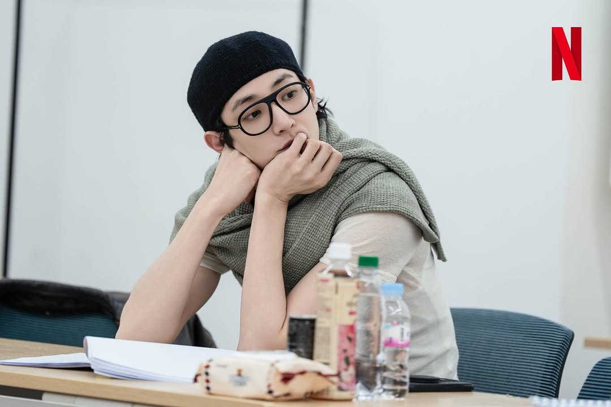
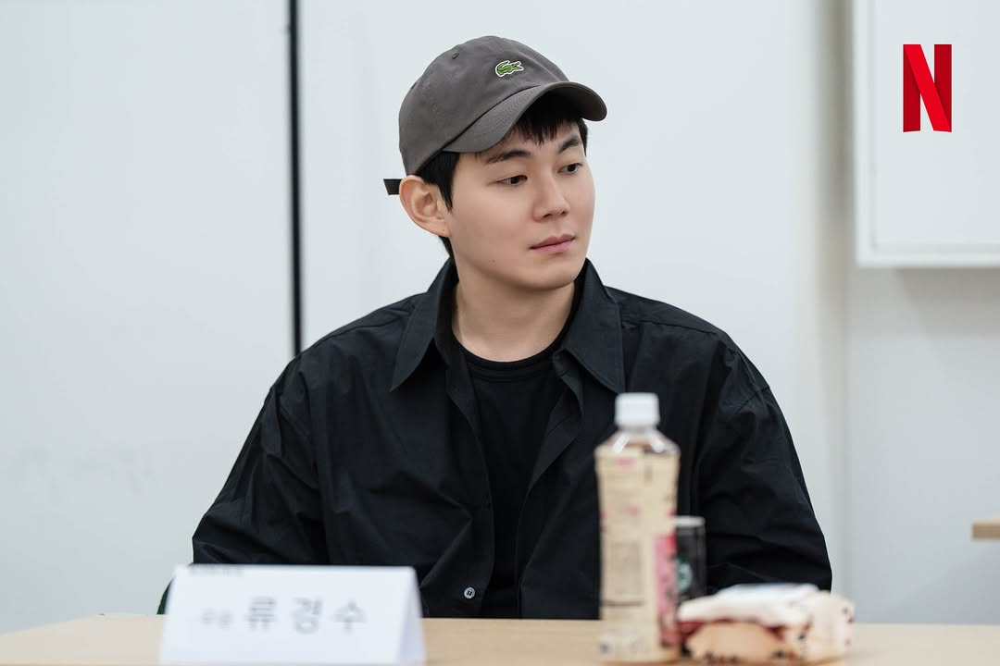
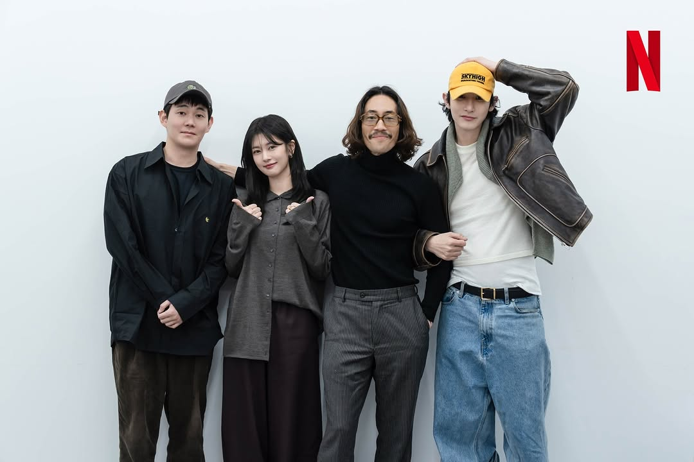

Netflix bagikan pembacaan naskah para pemeran dan konfirmasi jajaran para pemeran untuk drama terbaru "The Dealer."
"The Dealer" adalah serial drama kriminal yang mengikuti Geon Hwa, seorang dealer kasino brilian yang rencana pernikahannya tiba-tiba berantakan, memaksanya untuk melepaskan kekuatan tersembunyinya dan terjun ke dunia perjudian yang berbahaya untuk berhasil melangsungkan pernikahan.
"The Dealer," dibintangi oleh Jung So Min, Ryoo Seung Bum, Lee Soo Hyuk, dan Ryu Kyung Soo. Serial ini akan disutradarai oleh Choi Young Hwan, yang telah bekerja sebagai sinematografer dalam proyek-proyek seperti "Smugglers' dan "Veteran," dan sutradara "Squid Game," Hwang Dong Hyuk, akan bergabung dengan tim sebagai produser.

Jung So Min akan memerankan Jung Geon Hwa, seorang dealer kasino ulung yang terampil menangani tamu tetapi menghindari minum, berjudi, dan kesenangan lainnya. Setelah ditipu saat mencoba mendapatkan rumah pengantin baru, rencana pernikahannya menjadi kacau, mendorongnya untuk membangkitkan kemampuan tersembunyinya dan terjun ke dunia perjudian untuk memperbaiki keadaan.
Ryoo Seung Bum akan memerankan Hwang Chi Su, yang bertahan hidup dengan berjudi menggunakan uang yang ia peroleh dari mengemis di kasino dan akhirnya bergabung dengan rencana Geon Hwa.
Lee Soo Hyuk akan memerankan Jo Jun, seorang pemain yang mengguncang dunia kasino. Jo Jun mengendalikan meja kasino dengan keterampilan luar biasa dan ekspresi poker yang sempurna.

Ryu Kyung Soo akan memerankan Choi Woo Seung, pacar Geon Hwa dan seorang detektif kejahatan kekerasan.


~~
Source:
JTBC /Soompi